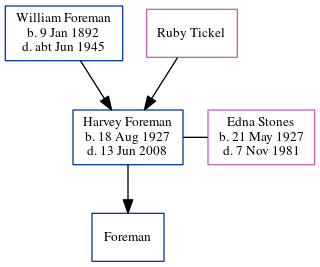

Harvey Revell Foreman 1927 - 2008
[ Home ] | [ Calendar ] | [ Surnames Index ] | [ Census Index ] | [ Family History ]A farmer and the child of William Foreman and Ruby Tickel, Harvey Foreman, the third cousin once-removed on the father's side of Nigel Horne, was born on Aug 18, 19271 and had 1 child with Edna May Stones: whose first name is unknown. In 1963, he was living at Wilson Street, Alton, Taranaki, New Zealand3.
He died on Jun 13, 2008 in Taranaki1,2.
Parents
- William George was born on Jan 9, 1892
Citations
- New Zealand Death Index - Findmypast
- New Zealand Billion Graves Cemetery Index - Findmypast
- New Zealand, Electoral Rolls, 1853-1981
Media
New Zealand Billion Graves cemetery index - US/BMD/BILLION/5/000028593136
New Zealand death index - ANZ/NZBMD/D/1505928
Family Tree
Generated by ged2site. Last updated on Jun 11, 2024